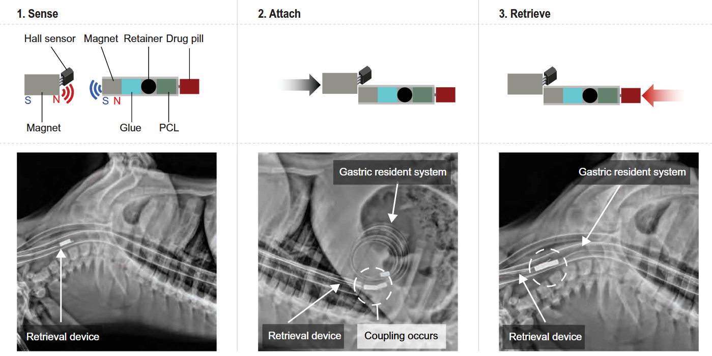

In Vivo Drug Device

Research Objective & Contribution
- The lab's primary objective was to create a device that could reside in the stomach for a month to improve drug adherence, a critical safety hurdle remained: How do we get it out? If a patient has an adverse reaction or the device malfunctions, invasive surgery cannot be the only removal option
- My objective was the "exit strategy." I hypothesized that a magnetic latching system, guided by external sensors, could allow a physician to retrieve the device through the esophagus without sedation or X-ray guidance.
- I designed and built a retrieval prototype that utilized a specialized magnetic coupling mechanism. After rigorous testing in simulated gastric fluid, I transitioned to in vivo validation.
Technical Highlights
- Subsystem Engineering & Sensor Integration: The core engineering challenge was creating a "handshake" between the retrieval tool and the device in a blind, fluid-filled environment (the stomach).
- Hardware: I designed a custom 3D-printed latch housing a high-strength magnet.
- Firmware: I engineered a detection system using Hall-effect sensors and Arduino micro-controllers. The system provided real-time feedback, alerting the user the moment magnetic lock was achieved, eliminating the need for visual confirmation via endoscopy.
Leadership Highlights
- Despite being an early-career researcher, I was entrusted with a critical subsystem (retrieval) that was a "go/no-go" criterion for the broader project’s viability. My success in the first phase led to an invitation to return and lead the manufacturing optimization phase.
- Success in the Langer Lab required synthesizing constraints from chemical engineering (polymer stability), mechanical engineering (latch mechanics), and biology (gastric anatomy). I acted as the technical bridge, translating biological constraints (e.g., stomach acidity) into mechanical specifications (e.g., latch strength), ensuring the device could survive the harsh gastric environment while remaining mechanically operable.
Skills
Experimental Design
MATLAB
Python
ImageJ/Fiji
Signal Processing
Statistical Modeling
Microscopy Instrumentation
Publications & Links
Awards
- 🧾 Authored a journal publication and a US patent
- 🎥 Presented work at two local symposiums